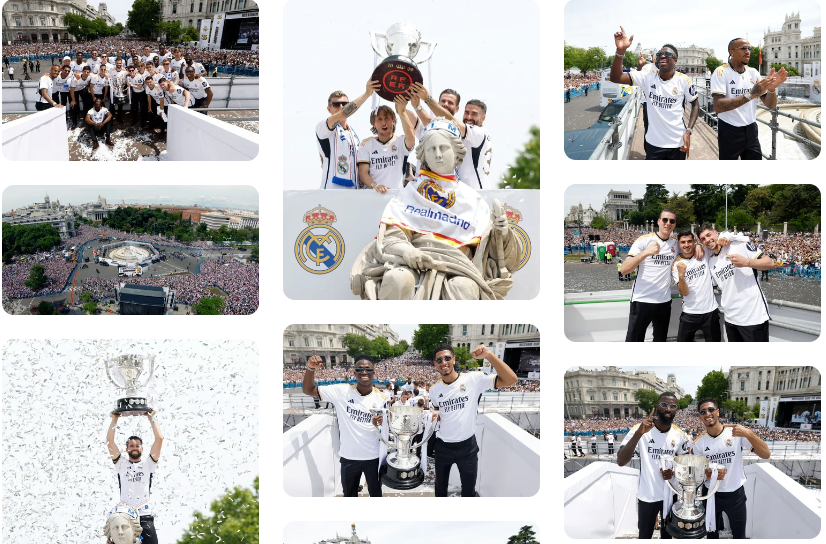
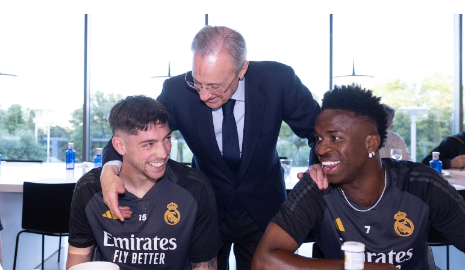
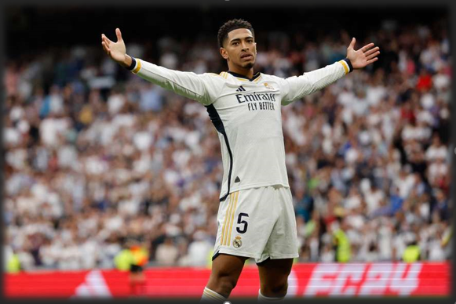
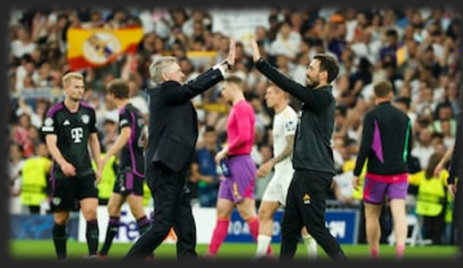
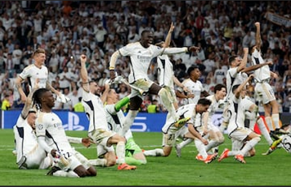

Noticias
El madridismo celebró la Liga 36 en Cibeles

Los jugadores y miles de aficionados festejaron el título conquistado por nuestro equipo. El madridismo volvió a llenar la plaza de Cibeles para celebrar un nuevo título de Liga. Tras los actos institucionales en la sede de la Comunidad de Madrid y el Ayuntamiento, el momento más esperado era la llegada del equipo a la fuente madrileña, donde miles de madridistas se dieron cita para festejar la Liga 36 junto a los jugadores. En la plaza, la música acompañó el ambiente festivo y los aficionados arroparon a los protagonistas de este inolvidable campeonato, en el que han firmado su mejor racha histórica de partidos sin perder (29). El escenario frente a la fachada del Ayuntamiento y las lonas alrededor del monumento mostraban los lemas “Campeones 36” y “Gracias madridistas"..
El presidente, con el equipo antes del Real Madrid-Bayern

Florentino Pérez acudió a la Ciudad Real Madrid para saludar al equipo antes del decisivo encuentro contra el Bayern de Múnich. El presidente deseó suerte al cuerpo técnico y a los jugadores el día previo al partido de vuelta de las semifinales de la Champions League, que se disputará en el estadio Santiago Bernabéu (miércoles, 21:00 h).
Jude Bellingham Celebrando un Gol
Jude Bellingham vino, vio y conquistó España en su primera temporada con el Real Madrid. El mediapunta inglés se convirtió en la figura clave del triunfo del club en la Liga.
Los milagros también se entrenan
El Real Madrid ha hecho que lo extraordinario parezca cotidiano y así, milagro a milagro, se ha metido en una nueva final de la Champions League, donde peleará el 1 de junio en Wembley por levantar la 15ª. Ante el Bayern lo hizo con una nueva remontada en los minutos finales, cuando parecía que el gol de Davies (no exento de ironía; todo indica que será madridista la temporada que viene) daría el pase a los bávaros, apareció Joselu para sentenciar con dos goles de ariete puro, ese que el Madrid no suele utilizar esta temporada y que aparece en momentos concretos. En este caso, para sacar billete para una nueva final de Copa de Europa.

Vinícius es un tesoro para el Real Madrid
Carlo Ancelotti ha sido uno de los principales responsables en la meteórica explosión goleadora de un Vini que sigue siendo uno de los futbolistas más desequilibrantes del planeta. Por tanto, el brasileño marca las diferencias en la vanguardia de un Real Madrid que está encantado con su crack.

Real Madrid-Bayern: la remontada histórica, el final de locura y la celebración
Los de Ancelotti le dan la vuelta al partido en tres minutos para el recuerdo, 88′ y 90+1′, con un doblete de Joselu. Davies había adelantado a los bávaros. Vinicius, indectectable e incontrolable, una pesadilla para los alemanes.
